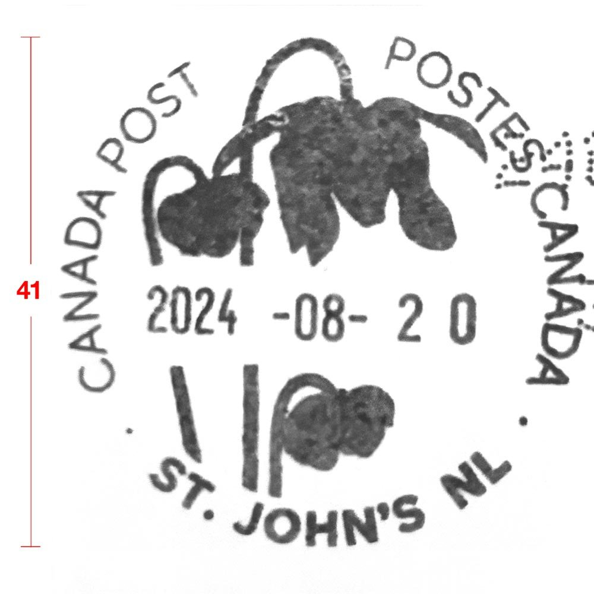

St John's A PO pictorial cancel
Flower
- Status
- Active
- Run dates
- 2024-01-01 to present
- Design
- flower
- Ink colour
- Black
- Designer
- Unknown
- Post office
- St John's A PO
98 Kenmount Rd,
St. John's, NL
A1B 1W0 - Subjects
- flower
Collect it by mail. Send your stamped covers, with a stamped return envelope, to the post office address above. How to collect pictorial cancels by mail · en français
 Pouch Cove POFirst to see the Sun
Pouch Cove POFirst to see the Sun Witless Bay POEcological Reserve
Witless Bay POEcological Reserve Brigus POBirthplace of Captain Robert Bartlett
Brigus POBirthplace of Captain Robert Bartlett Cupids POHeart
Cupids POHeart